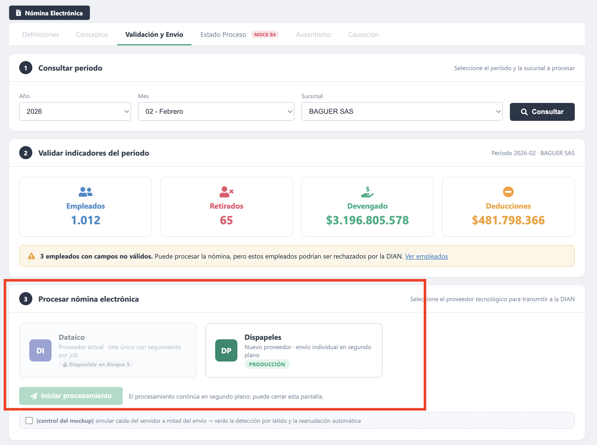
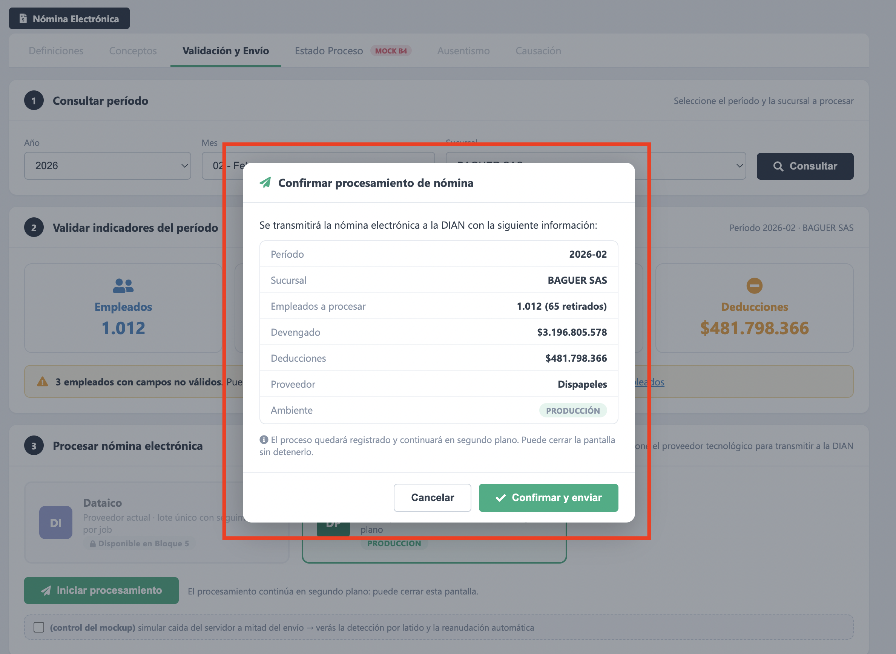
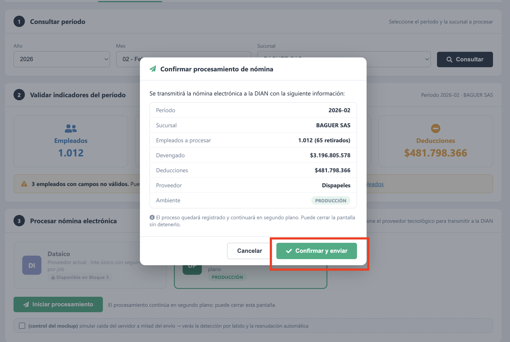
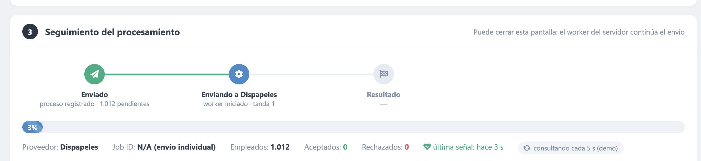

BaguerSAS/ErpBaguer · De: PM/Arquitectura · Para: dev que retomaEl requerimiento se entrega por bloques: una secuencia de hitos priorizada Dispapeles-primero (el proveedor con mayor urgencia de negocio y contrato ya conocido). "Hasta el Bloque 3" significa que los bloques 1, 2 y 3 viven en esta rama; el resto queda pendiente.
Hitos: H1 (Bloque 3) = Dispapeles end-to-end en segundo plano · H2 = historial real · H3 = paridad Dataico · H4 = novedades · Entrega = Bloque 7. El detalle de cada bloque pendiente está en la sección 8.
La rama está pusheada: 4 commits adelante y 15 detrás de master (habrá que rebasar antes de mezclar). Los 4 commits, en orden:
| SHA | Commit | Bloque |
|---|---|---|
| a4ef949 | feat: fundaciones de proceso y worker Dispapeles en segundo plano | B1 + B2 |
| 1d1245d | feat: acciones de proceso V2 y front de Validación y Envío (B3) | B3 |
| ed308eb | docs: scripts SQL del proceso (tablas + SPs) para ejecutar en BD dev | B1 (SQL) |
| de49ffe | fix: proyección del historial incluye año/mes/sucursal | B3 |
Crm-Baguer/ERP - Baguer.csproj.docs/sql/01-tablas-proceso.sql y docs/sql/02-sps-proceso.sql. Sin esto el código no arranca (el repositorio llama SPs que no existirían).EN_PROCESO y el siguiente poll lo reanuda solo, sin reenviar Nits ya registrados.Toda la lógica SQL vive en procedimientos almacenados (convención SBERP_GESTIONH* del módulo). El código C# nunca escribe SQL: llama a estos SP. Por eso ejecutarlos es el primer requisito (OPS-1).
01-tablas-proceso.sql — la estructura ("la libreta")Crea las 2 tablas que le dan memoria al procesamiento (hoy el resultado del envío se pierde) + sus índices:
BERP_NominaElectronicaProceso — cabecera: 1 fila por procesamiento (proveedor, estado, contadores Aceptados/Rechazados/Pendientes, FechaUltimaConsulta = latido, usuario, fechas).BERP_NominaElectronicaProcesoDetalle — detalle: 1 fila por empleado (Nit, Estado PENDIENTE→ENVIANDO_DOC→ACEPTADO/RECHAZADO, CUNE, prefijo/número, mensaje DIAN). FK a la cabecera + UNIQUE(IdProceso, Nit).02-sps-proceso.sql — las operaciones (12 SPs)| Grupo | SP | Qué hace |
|---|---|---|
| Nacer | …ProcesoNeInsert | inserta la cabecera en ENVIANDO |
| …ProcesoNeDetalleSeed | siembra las N filas del detalle en PENDIENTE (OPENJSON) | |
| Worker | …ProcesoNeTomar | candado: toma el proceso si nadie vivo lo tiene (latido) |
| …ProcesoNePendientes | trae los próximos N en PENDIENTE (una tanda) | |
| …ProcesoNeDetalleEstado | actualiza el estado de un empleado (+ CUNE / mensaje) | |
| …ProcesoNeContadores | recuenta la cabecera + toca el latido (heartbeat por tanda) | |
| …ProcesoNeCerrar | si Pendientes=0 fija COMPLETADO/CON_NOVEDADES | |
| Cabecera | …ProcesoNeUpdate | estado / jobid / mensajeError (ej. marcar FALLIDO) |
| Consultas | …ProcesoNePorId | cabecera por id (lo lee el polling y la reanudación) |
| …ProcesoNePorPeriodo | proceso más reciente del período (regla "ya procesado") | |
| …ProcesoNeHistorial | lista de procesos con filtros (pantalla de B4) | |
| …ProcesoNeDetalleSelect | filas de empleados de un proceso (detalle de B4/B6) |
OPENJSON y CREATE OR ALTER). Son idempotentes (se re-ejecutan sin romper). Orden: primero 01, luego 02. El 02 trae al final un bloque comentado "PRUEBA DEL CICLO" (14 EXEC) para validar todo el ciclo con 3 empleados. NAVEGADOR SERVIDOR (ErpBaguer / ASP.NET MVC 5) BD (SQL Server)
┌───────────────┐ HTTP ┌────────────────────────────┐ estático ┌───────────────┐ SP
│ .cshtml + .js │────────► │ NominaElectronicaController │────────────► │ ...Repository │─────► SBERP_GESTIONHProcesoNe*
└───────────────┘ └────────────┬───────────────┘ └───────────────┘ │
▲ polling │ Encolar() ▼
│ cada ~15s ▼ BERP_NominaElectronicaProceso
│ ┌────────────────────────────┐ usa BERP_NominaElectronicaProcesoDetalle
└──── lee estado ◄────│ DispapelesEnvioWorker │──────► DispapelesProveedor ──► API Dispapeles + log del dev
│ (QueueBackgroundWorkItem) │ (IProveedorNominaElectronica)
└────────────────────────────┘
CreateSQLQuery (patrón del repo).IProveedorNominaElectronica): aísla las diferencias de cada proveedor. Hoy solo DispapelesProveedor (Dataico llega en B5).QueueBackgroundWorkItem): el bucle de ~1.012 envíos corre en el servidor, no en el navegador.| Archivo | Rol | Bloque |
|---|---|---|
| docs/sql/01-tablas-proceso.sql | ➕ 2 tablas + índices (la libreta) | B1 |
| docs/sql/02-sps-proceso.sql | ➕ 12 SPs del ciclo de vida | B1 |
| Entity/NominaElectronicaProcesoEntity.cs | ➕ entidad cabecera | B1 |
| Entity/NominaElectronicaProcesoDetalleEntity.cs | ➕ entidad detalle | B1 |
| Mapping/NominaElectronicaProcesoMapping.cs | ➕ mapping NHibernate (contiene los 2 ClassMap, cabecera y detalle) | B1 |
| Form/NominaProcesoForm.cs | ➕ form de entrada de las acciones | B1 |
| Repository/NominaElectronicaProcesoRepository.cs | ➕ 12 métodos (1:1 con los SPs) | B1 |
| helpers/NominaElectronica/IProveedorNominaElectronica.cs | ➕ interfaz de proveedor | B2 |
| helpers/NominaElectronica/ModelosProveedorNe.cs | ➕ DTOs comunes (ResultadoDocumentoNe…) | B2 |
| helpers/NominaElectronica/DispapelesProveedor.cs | ➕ implementación Dispapeles (token + envío por documento) | B2 |
| helpers/NominaElectronica/DispapelesEnvioWorker.cs | ➕ worker en segundo plano (tandas + heartbeat + candado) | B2 |
| Controllers/NominaElectronicaController.cs | ✎ 5 acciones nuevas de proceso | B3 |
| Views/RrHh/NominaElectronicaValidacion.cshtml | ✎ front nuevo (pasos, radio-cards, modal, panel+polling) inline | B3 |
| Content/views/js/rrhh/nominaelectronica.js | ✎ hook: tras cargar indicadores, revela la selección de proveedor | B3 |
| ERP - Baguer.csproj | ✎ registro de los archivos nuevos | B1 |
➕ agregado · ✎ modificado
Prototipo interactivo = contrato de interfaz. Cada captura corresponde a un paso del diagrama y al código que lo ejecuta.



IniciarProcesamientoNomina: crea la cabecera, siembra los pendientes y encola el worker; responde en ~2 s. #1805NEP-Confirmar (cshtml:309) → ctrl:1960
La pestaña "Validación y Envío" se arma en NominaElectronicaValidacion.cshtml (754 líneas, con 2 bloques <script> inline) + nominaelectronica.js. Conviven dos flujos por prefijo de ID:
1805NEV-* → el flujo viejo del dev (validaciones, selección de período). Se reutiliza.1805NEP-* → el flujo nuevo del Bloque 3 (NEP = Nómina Electrónica Proceso): selección de proveedor, modal, panel y polling.nominaelectronica.js) llama ConsultarNominaElectronicaValidaciones (ctrl:373) → pinta los 4 indicadores. Además, la vista pregunta ConsultarProcesoPorPeriodo (cshtml:375 → ctrl:2084 → repo.ConsultarPorPeriodo → SP …PorPeriodo): si el período ya tiene proceso, monta el panel en vez de los proveedores (regla R3). Si no, el JS llama window.mostrarSeleccionProveedor_1805NEP() (cshtml:360).
.1805NEP-card-proveedor (cshtml:164, handler:394). Dispapeles activo (data-proveedor="DISPAPELES"); Dataico "disponible en fase 2" (se activa en B5). Al elegir, se habilita "Iniciar procesamiento".
#1805NEP-Modal (cshtml:280) con el resumen (período, sucursal, empleados, devengado, deducciones, proveedor, ambiente). Botón #1805NEP-Confirmar (cshtml:309).
IniciarProcesamientoNomina(form) (cshtml:447 → ctrl:1960), que: (1) autoriza y valida; (2) repo.CrearProceso → SP …Insert (cabecera ENVIANDO); (3) trae las cédulas y repo.SeedDetalle → SP …DetalleSeed (siembra las 1.012 en PENDIENTE); (4) DispapelesEnvioWorker.Encolar(idProceso); (5) responde { idProceso } en ~2 s. El navegador queda libre.
DispapelesEnvioWorker.Ejecutar (worker:62): repo.TomarProceso (candado) → bucle de tandas: repo.TomarPendientes(85) → Parallel.ForEach (3-5 en vuelo) por empleado: ActualizarDetalleEstado(ENVIANDO_DOC) → DispapelesProveedor.EnviarDocumento (prov:154) (asegura token, genera JSON, POST, extrae CUNE, escribe el log del dev) → ActualizarDetalleEstado(ACEPTADO/RECHAZADO) → al cerrar la tanda ActualizarContadoresYLatido (heartbeat). Al agotar pendientes: repo.CerrarProceso (COMPLETADO/CON_NOVEDADES).
montarPanelPolling_1805NEP(idProceso) (cshtml:382) arranca un setInterval (_pollNEP, ~15 s) que llama ConsultarEstadoProcesoNomina(idProceso) (cshtml:508/662 → ctrl:2037 → repo.ConsultarProceso → SP …PorId). Ese endpoint lee la cabecera (que el worker mantiene por tanda) y devuelve { estado, total, aceptados, rechazados, pendientes, workerActivo }. El panel solo pinta — nunca calcula. Estado final → clearInterval.
avance = (aceptados+rechazados)/total leído de la BD.No hay endpoint "Reanudar" separado: la lógica vive dentro de ConsultarEstadoProcesoNomina. Si detecta el proceso EN_PROCESO con el latido vencido (workerActivo:false), relanza el worker (Encolar de nuevo) desde el primer pendiente. El panel muestra "interrumpido — reanudando".
| Acción de UI | Endpoint (Controller) | Método repo | SP |
|---|---|---|---|
| Consultar indicadores | ConsultarNominaElectronicaValidaciones | — | (SPs de validación existentes) |
| Regla "período ya procesado" | ConsultarProcesoPorPeriodo (2084) | ConsultarPorPeriodo | …PorPeriodo |
| Confirmar y enviar | IniciarProcesamientoNomina (1960) | CrearProceso + SeedDetalle | …Insert · …DetalleSeed |
| Polling del panel | ConsultarEstadoProcesoNomina (2037) | ConsultarProceso | …PorId |
| (worker, sin UI) | — | TomarProceso · TomarPendientes · ActualizarDetalleEstado · ActualizarContadoresYLatido · CerrarProceso | …Tomar · …Pendientes · …DetalleEstado · …Contadores · …Cerrar |
| Historial / detalle (pantalla en B4) | ConsultarHistorialProcesos (2120) · ConsultarDetalleProceso (2157) | ConsultarHistorial · ConsultarDetalle | …Historial · …DetalleSelect |
DispapelesProveedor no reinventa el envío: envuelve la integración Dispapeles que ya vive en master.
NominaElectronicaDispapelesHelper — token auto-renovable (lo llama AsegurarToken() prov:48).EnviarNominaAsync — el POST del documento + respuesta NominaElectronicaRtaServicio.…ListaPersonalNomina_Dispapeles, …GenerarJsonEmpleado_Dispapeles, …InsertarLog_Dispapeles.BERP_NominaElectronica_LogEnvio_Dispapeles — sigue recibiendo su fila por documento (TipoOperacion = "ENVIO NOMINA WORKER"). La libreta es el estado; tu log es la auditoría. Conviven.EnviarNominaDispapeles (ctrl:1406): quedó intacta y será reemplazada por IniciarProcesamientoNomina. Se marcará [Obsolete] más adelante. No conviene evolucionarla en paralelo, para evitar conflictos.| Falta | Bloque | Nota |
|---|---|---|
| Pestaña "Estado Proceso" con historial real | B4 | hoy sigue el mock; los endpoints …Historial/…DetalleSelect ya existen |
Reintentar proceso FALLIDO | B4 | — |
| Dataico como proveedor real | B5 | DataicoProveedor + reconciliación job-status |
| Detalle de empleados + corregir/reenviar rechazados | B6 | depende de OPS-2 (mecánica de reemplazo Dispapeles) |
| Limpieza del flujo viejo + activar UI final | B7 | — |
01 y 02 en dev y confirmar SQL Server 2016+.timeout HTTP en EnviarNominaAsync (hoy sin timeout), tamaño de tanda (85) y paralelismo (3), URL de producción de Dispapeles.master — rebasar antes de integrar.master...feature/ERP-NE-VALIDACION-ENVIO (4 commits, 15 archivos) · líneas de código citadas verificadas contra la rama · Repo BaguerSAS/ErpBaguer.